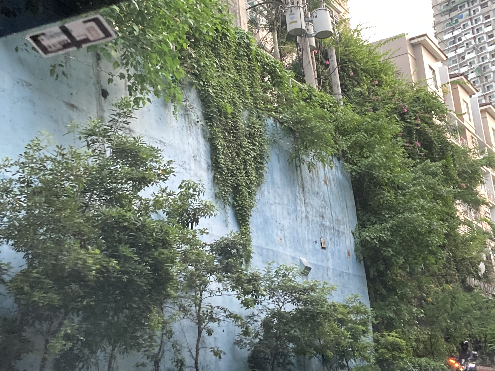

|
anything and nothing about me |
||
|  |
Hi, my name is Gwyneth Borja from IX-Strontium. This website is to spread the culture and tourist spots in the Philippines. This was supposed to be an about us page, but since there is no us, this will be only about me :D (this is for entertainment purposes only). Though the sole purpose of this website is to spread information about the Philippines, I can still incorporate my favorite songs into this. Since Taylor Swift has just released a new album, there will be "subtle" references related to it on this website.
| |
REFERENCES:
https://www.wikiwand.com/en/Manananggal https://www.detourista.com/guide/roxas-city-attractions/ https://mapio.net/pic/p-47856159/ https://philippines.travel/destinations/iloilo https://www.travelingmorion.com/2014/09/iloilo-city-jaro-cathedral.html https://philippines.travel/destinations/bohol https://www.tripadvisor.com.ph/Attraction_Review-g298466-d4039862-Reviews-Nelly_s_Garden-Iloilo_City_Iloilo_Province_Panay_Island_Visayas.html https://lobocriverwatch.com/chocolate-hills-in-carmen/ https://destinationdeluxe.com/10-things-to-do-in-bohol-philippines/ https://touristspotsfinder.com/antique-tourist-spots/ https://nojuanisanisland.com/2015/03/18/nogas-island-antique-philippines/ https://culasiantique.gov.ph/malalison-island-2/ https://monster.fandom.com/wiki/Maria_Makiling https://ztevetevans.wordpress.com/2017/08/30/philippine-folklore-maria-makiling-of-mount-makiling/#:~:text=In%20many%20legends%2C%20Maria%20Makiling,eternal%20love%20to%20each%20other. https://www.hellapinay.com/article/2016/11/23/mariang-makiling-tagalog-diwata-guardian-of-mt-makiling https://www.canva.com https://www.tripadvisor.com.ph/Attraction_Review-g2184450-d7935732-Reviews-Hidden_Valley_Springs-Calauan_Laguna_Province_Calabarzon_Region_Luzon.html https://guidetothephilippines.ph/articles/what-to-experience/best-laguna-tourist-spots https://www.klook.com/en-PH/activity/10562-hidden-valley-springs-private-day-tour-manila/ https://www.e-philippines.com.ph/philippine-tourist-destinations/hidden-valley-springs-laguna/ https://zurielshots.blogspot.com/2011/03/maria-makiling.html https://www.canva.com